École Normale Supérieure de l’Enseignement Technique de Mohammedia (ENSET) Université Hassan II de Casablanca
en partenariat avec ADRIA Business & Technology
Test ADRIA PFE 2027 — Épreuve pratique (durée : 3h)
Réalisé par : Nawal EL AARAJ
Cycle ingénieur — S5
Année scolaire : 2026/2027
Date : 30 octobre 2026
Repository : https://github.com/NAWAL-EL-AARAJ/el-aaraj-nawal-test-adria-pfe-27
Ce travail a été réalisé dans le cadre de l’épreuve technique de sélection ADRIA pour le PFE 2027, une épreuve pratique de 3 heures.
Besoin. Une banque souhaite une plateforme qui permette de :
Objectifs. Concevoir une architecture micro-services découplée, résiliente et configurable de façon centralisée, exposer la même logique métier en REST, GraphQL et MCP, et brancher dessus un agent IA et un client web.
Technologies. Java 21, Maven multi-modules, Spring Boot 4.1.2, Spring Cloud 2025.1.4 (Gateway, Eureka, Config, OpenFeign), Resilience4J, Spring AI 2.0.1 (LLM via Groq, client et serveurs MCP), Spring for GraphQL, Apache Kafka, Angular 22 avec Angular Material, Docker Compose (Kafka et Kafka UI).
Plan. Après le tableau des modules, chaque partie de l’épreuve (A à G) est présentée : ce qui a été fait, les choix techniques, un extrait de code ou de configuration, et les captures.
Les ports sont ceux définis dans les
application.properties des modules et dans
config-repo/.
| Module | Port | Rôle |
|---|---|---|
| discovery-service | 8761 | Annuaire Eureka |
| config-service | 8888 | Spring Cloud Config Server (profil native, dossier
config-repo/) |
| gateway-service | 8080 | Point d’entrée unique (Spring Cloud Gateway), CORS pour
http://localhost:4200 |
| account-service | 8081 | Comptes : REST, GraphQL et MCP, base H2 |
| transaction-service | 8082 | Transactions : REST, GraphQL et MCP, Feign et Resilience4J, producteur Kafka |
| notification-service | 8083 | Consommateur Kafka |
| ai-agent-service | 8084 | Agent Spring AI (/api/chat) et bot Telegram |
| Kafka | 9092 | Broker (mode KRaft, docker-compose-infra.yml) |
| Kafka UI | 8090 | Interface web de Kafka |
| frontend (Angular) | 4200 | Client web (ng serve) |
Remarque : au moment des captures, le port 8080 était déjà occupé sur le poste par un autre logiciel (Jenkins), et le port 4200 par un autre projet. La gateway a donc été lancée sur 8086 et le front sur 4201, avec la même configuration. Les ports du projet restent 8080 et 4200.
Ce qui a été fait.
el-aaraj-nawal-test-adria-pfe-27.pom.xml parent (packaging pom) qui déclare les
7 modules et centralise les versions par des BOM (Spring Cloud, Spring
AI).Extrait (pom.xml parent) :
<parent>
<groupId>org.springframework.boot</groupId>
<artifactId>spring-boot-starter-parent</artifactId>
<version>4.1.2</version>
</parent>
<properties>
<java.version>21</java.version>
<spring-ai.version>2.0.1</spring-ai.version>
<spring-cloud.version>2025.1.4</spring-cloud.version>
</properties>Choix technique. Les versions de Spring Boot, Spring Cloud et Spring AI ont été choisies compatibles entre elles et gérées une seule fois dans le parent. Les modules n’indiquent donc aucune version.
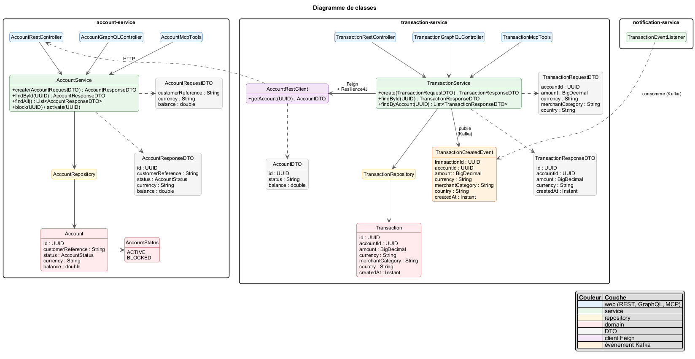
Figure B1 — Diagramme de classes. Un Account
(identifiant UUID, référence client, statut ACTIVE ou
BLOCKED, devise, solde) possède des
Transaction (montant, devise, catégorie marchand, pays,
type DEBIT, CREDIT ou TRANSFER).
Comme les deux entités sont dans des services différents, le lien se
fait par accountId et non par une clé étrangère.
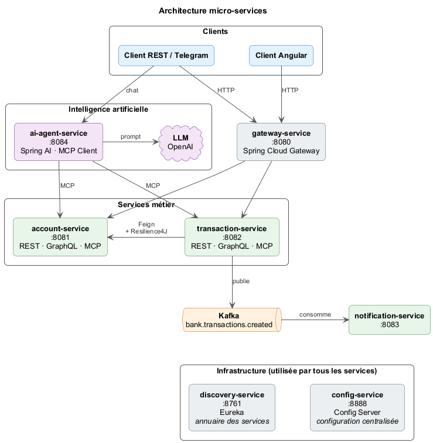
Figure B2 — Architecture micro-services. Les clients (Angular, REST, Telegram) passent par la gateway. Les services s’enregistrent dans Eureka et lisent leur configuration dans config-service. transaction-service appelle account-service via OpenFeign et publie dans Kafka. L’agent IA appelle les outils MCP des services métier.
Organisation en couches. Chaque service métier suit la même structure :
| Package | Rôle |
|---|---|
domain/ |
entités JPA et enums |
repository/ |
interfaces Spring Data JPA |
service/ |
logique métier, DTO, mappers, exceptions |
web/rest/ |
contrôleurs REST et gestion globale des erreurs |
web/graphql/ |
contrôleurs GraphQL |
mcp/ |
outils MCP (@Tool) pour l’agent IA |
Les contrôleurs REST, GraphQL et MCP appellent la même couche service. Une règle métier n’est donc écrite qu’une seule fois.
Règles métier (transaction-service) :
bank.transaction.max-amount
(1000, lu depuis config-service) ;ACTIVE ;Une violation renvoie 422 avec un message explicite, un
compte introuvable renvoie 404 et des données invalides
renvoient 400.
OpenFeign et Resilience4J. transaction-service lit
et débite le compte via un client Feign
(lb://account-service), protégé par un circuit breaker et
un retry :
resilience4j.circuitbreaker.instances.accountService.sliding-window-size=10
resilience4j.circuitbreaker.instances.accountService.minimum-number-of-calls=5
resilience4j.circuitbreaker.instances.accountService.failure-rate-threshold=50
resilience4j.circuitbreaker.instances.accountService.wait-duration-in-open-state=10s
resilience4j.retry.instances.accountService.max-attempts=3Les erreurs métier (compte introuvable, opération refusée) sont
ignorées par le circuit breaker : seule une vraie
indisponibilité ouvre le circuit. Le fallback renvoie
503 - Service compte indisponible, réessayez plus tard.
MCP. Les services exposent leurs outils MCP en
STREAMABLE HTTP sur /mcp, par exemple :
@Tool(description = "Retourne le solde et la devise d'un compte bancaire")
public String getBalance(@ToolParam(description = "Identifiant UUID du compte") String accountId) {
AccountResponseDTO account = accountService.findById(UUID.fromString(accountId));
return String.format(Locale.ROOT, "%.2f %s", account.balance(), account.currency());
}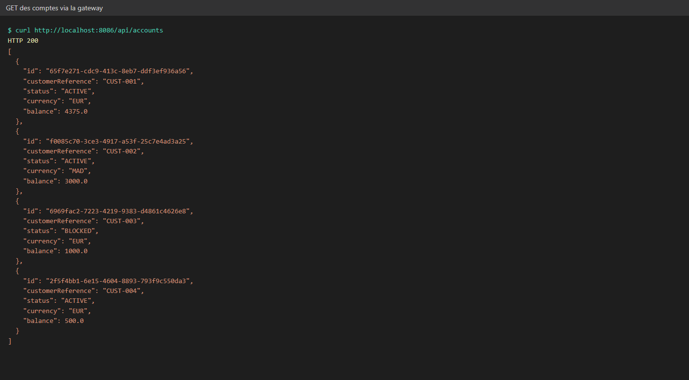
Figure C1 — Liste des comptes via la gateway. Les 3 comptes
créés au démarrage : un compte EUR actif, un compte MAD actif et un
compte EUR bloqué. La gateway route /api/accounts/** vers
lb://ACCOUNT-SERVICE.
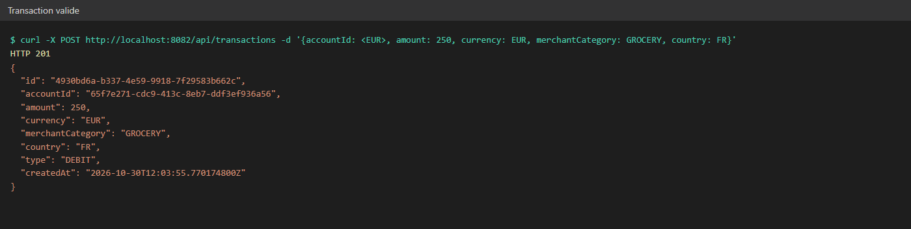
Figure C2 — Transaction valide. Réponse 201
avec une transaction DEBIT. Le solde du compte est débité
dans account-service via Feign.
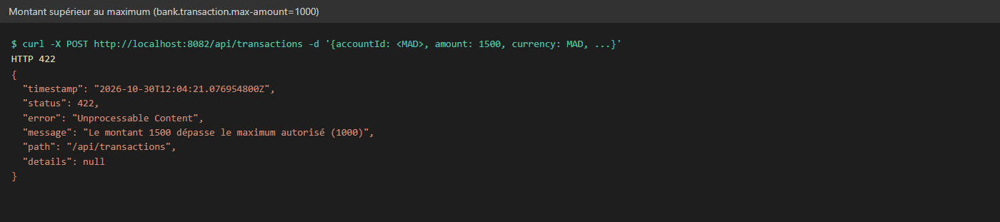
Figure C3 — Montant supérieur au maximum. Un paiement de
1500 est refusé en 422, car la limite de 1000 vient de la
configuration centralisée.
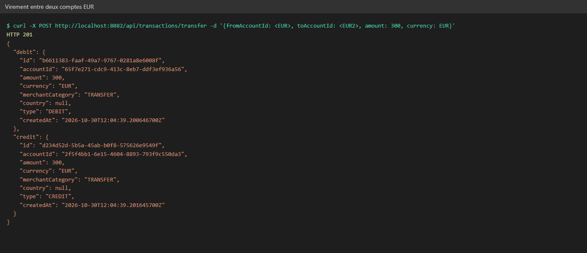
Figure C4 — Virement entre deux comptes EUR. Deux
transactions TRANSFER sont créées : un débit sur le compte
source et un crédit sur le compte destination.
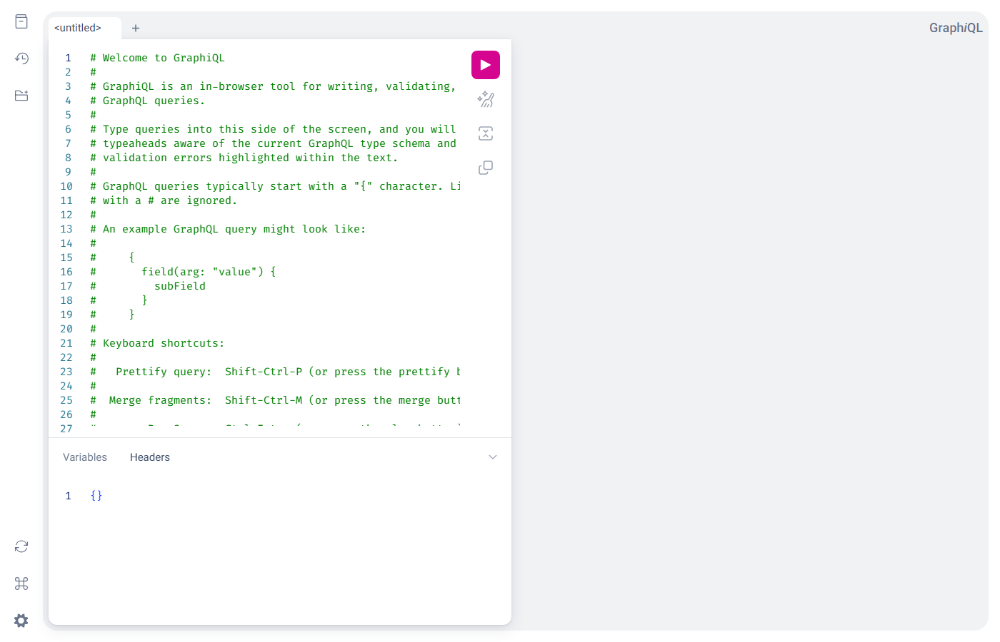
Figure C6 — GraphiQL d’account-service. La même couche
service est exposée en GraphQL (/graphql, et
/graphql/accounts via la gateway).
Le scénario de fallback Resilience4J (account-service arrêté, puis
circuit OPEN) est décrit pas à pas dans
docs/tests.md, section 10. Faute de temps, il n’a pas été
capturé.
lb://...).native,
il lit le dossier config-repo/. Le maximum autorisé y est
défini dans application.properties :bank.transaction.max-amount=1000La valeur peut être rechargée à chaud avec
POST /actuator/refresh sur transaction-service.
/api/accounts/**, /api/transactions/**,
/api/chat/**, /graphql/accounts et
/graphql/transactions, plus un CORS global pour le client
Angular..route("account-service", r -> r.path("/api/accounts/**").uri("lb://ACCOUNT-SERVICE"))
.route("transaction-service", r -> r.path("/api/transactions/**").uri("lb://TRANSACTION-SERVICE"))
.route("ai-agent-service", r -> r.path("/api/chat/**").uri("lb://AI-AGENT-SERVICE"))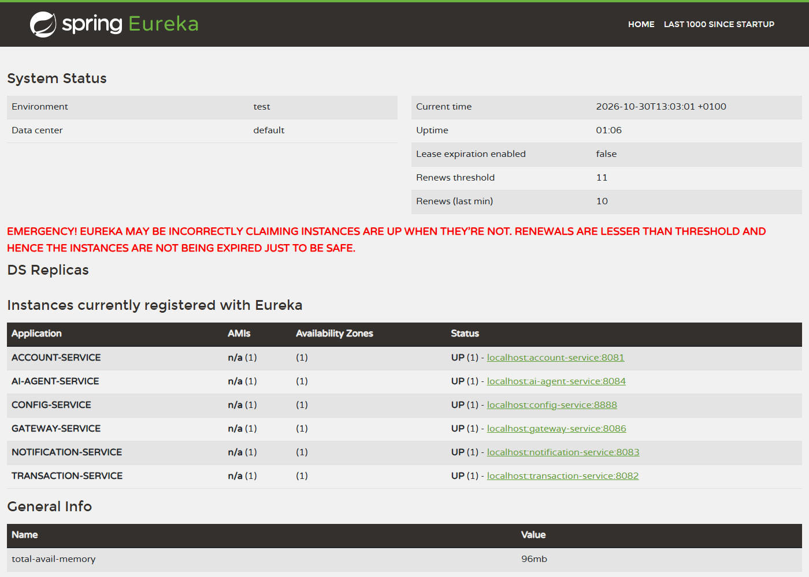
Figure D1 — Tableau de bord Eureka. Les services enregistrés auprès de l’annuaire.
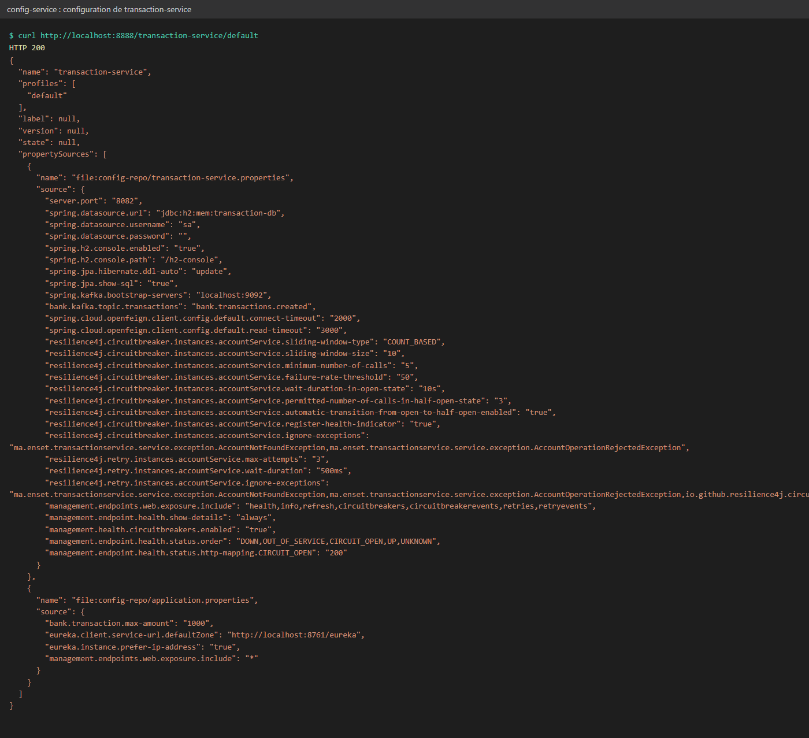
Figure D2 — Configuration servie à transaction-service.
bank.transaction.max-amount=1000 vient de
config-repo/application.properties, avec les réglages
Feign, Resilience4J et Kafka de
config-repo/transaction-service.properties.
Ce qui a été fait. ai-agent-service
(8084) est un agent Spring AI :
GROQ_API_KEY, modèle modifiable par LLM_MODEL)
;MessageChatMemoryAdvisor, isolée par
conversationId ;POST /api/chat avec
{conversationId, message} renvoie
{conversationId, answer}, et une erreur du LLM ou d’un
service renvoie un 503 clair ;getUpdates, sans webhook, donc il fonctionne en local),
activé seulement si TELEGRAM_BOT_TOKEN est défini. Chaque
message passe par le même AgentService que
/api/chat, avec le chatId Telegram comme conversationId.
/start affiche un message d’accueil, une erreur déclenche
un message clair, et les réponses de plus de 4000 caractères sont
découpées en plusieurs messages.@Bean
public ChatClient chatClient(ChatClient.Builder builder, ChatMemory chatMemory, ToolCallbackProvider mcpTools) {
return builder
.defaultSystem(SYSTEM_PROMPT)
.defaultAdvisors(MessageChatMemoryAdvisor.builder(chatMemory).build())
.defaultToolCallbacks(mcpTools)
.build();
}spring.ai.mcp.client.streamable-http.connections.account-service.url=http://localhost:8081
spring.ai.mcp.client.streamable-http.connections.transaction-service.url=http://localhost:8082
telegram.bot.token=${TELEGRAM_BOT_TOKEN:}Au démarrage, le log confirme la connexion du bot :
Bot Telegram connecté : @adria_nawal_bank_bot (id 8801613049), mode long polling.
Point en cours. Avec le modèle
openai/gpt-oss-120b de Groq, l’enchaînement « appel d’outil
puis réponse » est refusé par Groq (champ reasoning_content
non accepté). L’agent répond alors par le message d’erreur prévu. La
correction identifiée consiste à ajouter l’option
spring.ai.openai.chat.options.extra-body.include_reasoning=false.
Capture Telegram : captures/e-telegram.png
bank.transactions.created (3
partitions), créé par transaction-service.accountId. Tous les
événements d’un même compte vont dans la même partition, donc dans
l’ordre.@TransactionalEventListener(AFTER_COMMIT)) : une
transaction refusée ou annulée ne produit aucun événement.notification-group) consomme le topic et journalise une
notification. Un message illisible est ignoré grâce à
ErrorHandlingDeserializer.Format de l’événement :
{"eventId":"...","eventType":"TransactionCreated","transactionId":"...",
"accountId":"<id du compte>","amount":75,"currency":"EUR",
"occurredAt":"2026-10-30T11:11:08.282885800Z"}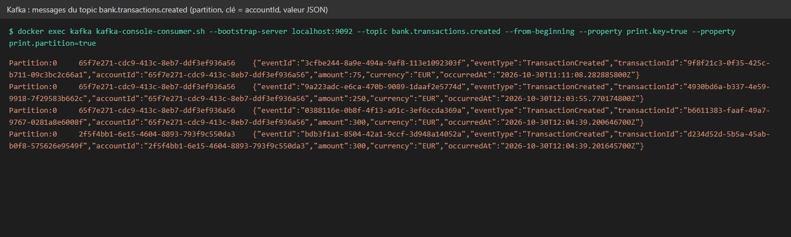
Figure F1 — Messages du topic
bank.transactions.created. Chaque ligne affiche la
partition, la clé (accountId) et l’événement JSON publié
par transaction-service.
Ce qui a été fait. Une application Angular 22
(frontend/), avec Angular Material et des composants
standalone :
ApiService : tous les appels passent par la gateway
;POST /api/chat avec un conversationId propre à
la session ;createTransaction(request: TransactionRequest): Observable<Transaction> {
return this.http.post<Transaction>(`${this.baseUrl}/transactions`, request);
}npx ng build passe sans erreur.
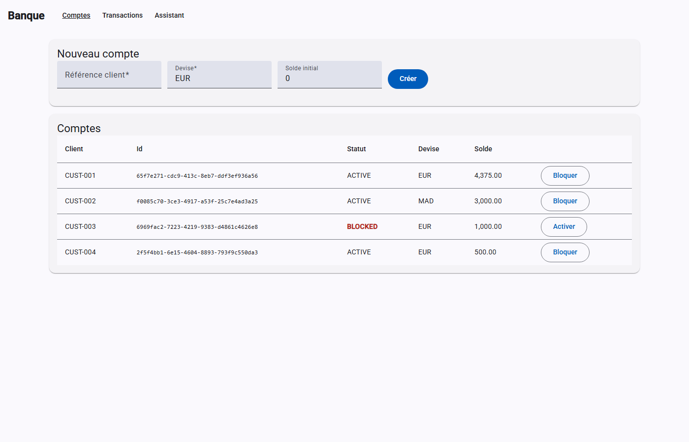
Figure G1 — Page Comptes. Tableau des comptes, avec le
statut BLOCKED en rouge, le formulaire de création et les boutons
Bloquer et Activer, qui appellent
PUT /api/accounts/{id}/block et /activate.
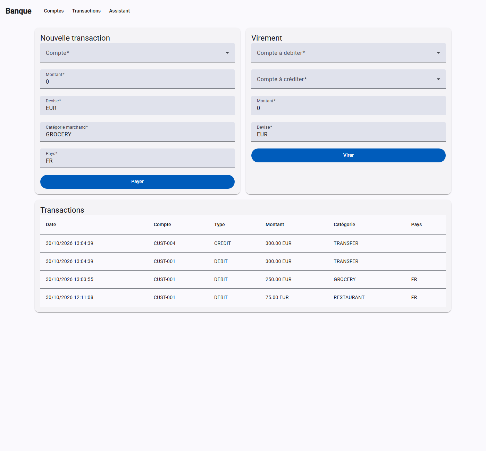
Figure G2 — Page Transactions. Formulaires de paiement et de
virement, et historique des transactions. Les erreurs 4xx
et 5xx du backend s’affichent dans une snackbar.
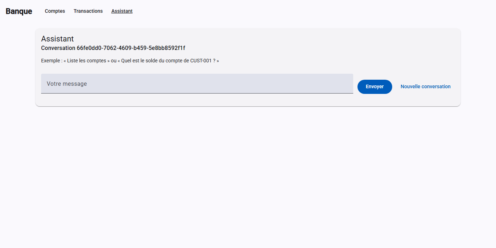
Figure G3 — Page Assistant. Chat relié à
POST /api/chat, avec un conversationId par
session et un bouton « Nouvelle conversation ».
Bilan.
Compétences mobilisées. Architecture micro-services Spring Cloud, conception en couches, résilience (circuit breaker, retry, fallback), messagerie événementielle, intégration d’un LLM et du protocole MCP, développement front Angular.
Difficultés.
Perspectives.